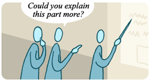

While we typically think of culture as defined by geography or ethnicity (e.g., American culture, Chinese culture), the term also applies to the practices, behaviors, and expectations of smaller groups of people — whether they're a gang of skateboarding youth or the employees of a high-powered consulting firm. Though embedded in the larger culture surrounding them, such subcultures have their own sets of unwritten rules for interacting with one another, and scientists are no exception. In science, these rules of good behavior are fairly general but are essential to maintaining the quality of scientific evidence and ideas. The scientific community expects:

Rigorous scrutiny. Imagine that you walk into a room where someone is speaking to a crowd of people. Audience members are questioning the speaker intently: "Did you consider …? But what about …? Why do you think that …?" In many communities, such intense scrutiny would signal distrust of the speaker, but in science, such scrutiny is business-as-usual. In fact, it often means that the speaker has made an important point that everyone cares enough about to question and investigate further. In science, all ideas (especially the important ones!) must stand up to rigorous scrutiny. The culture of science does not value dogma. Scrutinizing, questioning, and investigating important ideas helps ensure that only ideas supported by evidence and based on sound reasoning are accepted by the community.
IS IT REALLY ALL RELATIVE?
Albert Einstein's writings on special and general relativity presented a novel picture of the universe: time could expand and contract, space was integrated with time into the new entity space-time, and matter could theoretically be reconstituted in the form of energy. When general relativity was proposed in 1916, the ideas were strange to many and confusing to others, but definitely intriguing — especially since the theory helped make sense of previously inexplicable anomalies, like aberrations in the orbit of Mercury. Immediately afterwards and right up to today, scientists continue to scrutinize and test Einstein's ideas, not because they think that general relativity must be wrong — but because so many aspects of those ideas seem to be right! To learn more about testing Einstein's ideas visit our side trips on the topic:
Illuminating relativity: Experimenting with the stars
Fair tests in physics: Examining eclipses
Honesty, integrity, and objectivity. The aim of science is to uncover the real workings of the natural world, and that requires honesty. You can't get to the truth by exaggerating results, fudging numbers, selectively reporting data, or interpreting evidence in a biased way. Hence, scientists expect other scientists to act with honesty and integrity, and treat any violation of this expectation quite seriously.
THE BEST POLICY
In science, honesty really is the best policy — even if that means publicizing a slip-up. Geoffrey Chang, a professor at the Scripps Research Institute, has made a successful career working out the physical structures of proteins used in cell membranes. His work was published in top journals and cited by other scientists many times. Then, in 2006, he found a mistake. Prompted by conflicting results from other researchers, Chang discovered that, for the past five years, he had been analyzing his data with a flawed computer program, leading to incorrect results. So what did he do? Exactly what the culture of science expected of him: he published letters retracting his previous work, offered an apology, and then started the work of reanalyzing his data in order to correct his results.
Credit where credit is due. In science, credit matters. A magazine or newspaper article rarely acknowledges the sources of its arguments, the books the author read, or the interviews conducted. Science, on the other hand, is scrupulous about giving credit where credit is due. Scientific research articles always provide a list of citations, crediting other scientists for ideas, techniques, and studies that were built upon by the current research. This reference system gives credit to those who deserve it, but it also creates a sort of paper trail that helps other scientists better evaluate the new study and see how it fits with previous research. By providing a list of references, an author invites other scientists to see for themselves if the ideas the author cites are supported by evidence, if the assumptions he or she makes are justified, and if the techniques described by others have been properly implemented.
SETTING YOUR CITES
The number of citations a paper receives can help indicate how influential it was, since important research influences how other scientists think about a topic and will be cited many times in other papers. For example, the 1974 paper that originally hypothesized that chlorofluorocarbons would deplete the ozone layer has been cited more than 1700 times! Compared to many other papers published the same year (e.g., a paper on the nutritive value of coconut protein extract, which has received five citations), that's a pretty impressive statistic! To learn more, check out the story behind the 1974 ozone paper:
Ozone depletion: Uncovering the hidden hazard of hairspray
Adherence to ethical guidelines. Science is flexible and open to new ideas, but it is not an anarchic free-for-all. Many laws apply to science, and in many cases, scientists have constructed their own even more stringent guidelines in order to ensure that scientific work is of high quality, is performed in ethical ways, and benefits society. For example, scientific journals maintain an elaborate set of policies covering everything from scientists with a financial stake in their own studies, to biosecurity threats that might result from publishing an article, to the care and use of research animals, to how human participants in a study must be treated. Not abiding by these policies makes it difficult (or impossible) to get one's research published. Funding agencies maintain a similar set of guidelines that must be followed if a scientist hopes to get research funds from that agency. And of course, scientific organizations get in on the act too. For example, the National Academies (a group of premier scientific organizations in the U.S.) assembled more than 40 scientists to draw up a set of guidelines that balance ethical concerns about embryonic stem cell research with its potential rewards. Members of the scientific community are expected to abide by such guidelines.
KEEPING TABS ON TESTING
A cancer researcher discovers a chemical that she thinks might help treat leukemia. What should her next steps be? You might imagine that recruiting leukemia patients to begin testing would be next up — but in fact, jumping into human trials at this point would violate many federal regulations and international codes. In order to protect participants, scientists have drawn up a strict set of guidelines outlining when humans can participate in experiments and how they must be treated. These guidelines, known as human subjects protocols or policies for the protection of human subjects, cover everything from how much testing a drug must undergo before it reaches human patients, to what information participants must have before entering into a test, to what sort of paperwork study participants must sign. And these regulations apply to any sort of scientific research involving human participants — whether it's testing a new drug, monitoring the effect of exercise on cholesterol levels, or just studying factors affecting the reading ability of fourth graders. Such guidelines (which vary slightly from country to country) are designed to ensure that scientific interest in the outcome of a test never outweighs risks to the well-being of human participants. So before a potential leukemia drug is ever tested on human patients, it must first be tested in both Petri dishes and animals (adhering to another set of ethical guidelines in the case of animal research) to show that the drug is safe and holds promise above and beyond other treatments currently available. To learn more, branch out and visit:
The National Institutes of Health's resource on protections for human subjects
Here we've seen that the culture of science expects certain sorts of conduct from its community members. To find out what happens when a scientist doesn't meet those expectations, read on …